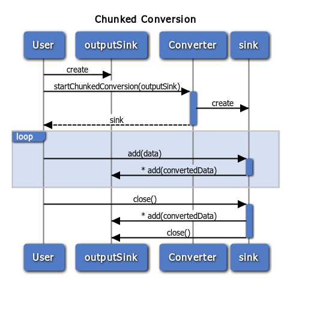

Converters and Codecs
How to write efficient conversions
Written by Florian Loitsch
(updated March 2015)
Converting data between different representations is a common task in computer engineering. Dart is no exception and comes with dart:convert, a core library that provides a set of converters and useful tools to build new converters. Examples of converters provided by the library include those for commonly used encodings such as JSON and UTF-8. In this document, we show how Dart’s converters work and how you can create your own efficient converters that fit into the Dart world.
Big picture
Dart’s conversion architecture is based on converters, which translate from one representation to another. When conversions are reversible, two converters are grouped together into a codec (coder-decoder). The term codec is frequently used for audio and video processing but also applies to string encodings such as UTF-8 or JSON.
By convention, all converters in Dart use the abstractions provided in the dart:convert library. This provides a consistent API for developers and ensures that converters can work together. For instance, converters (or codecs) can be fused together if their type matches, and the resulting converter can then be used as a single unit. Furthermore, these fused converters frequently work more efficiently than if they had been used separately.
Codec
A codec is a combination of two converters where one encodes and the other one decodes:
abstract class Codec<S, T> {
const Codec();
T encode(S input) => encoder.convert(input);
S decode(T encoded) => decoder.convert(encoded);
Converter<S, T> get encoder;
Converter<T, S> get decoder;
Codec<S, dynamic> fuse(Codec<T, dynamic> other) { .. }
Codec<T, S> get inverted => ...;
}
As can be seen, codecs provide convenience methods such as encode() and
decode() that are expressed in terms of the encoder and decoder. The fuse()
method and inverted getter allow you to fuse converters and
change the direction of a codec, respectively.
The base implementation of
Codec
for these two members
provides a solid default implementation
and implementers usually don’t need to worry about them.
The encode() and decode()
methods, too, may be left untouched, but they can be extended for additional
arguments. For example, the
JsonCodec
adds named arguments to encode() and decode()
to make these methods more useful:
dynamic decode(String source, {reviver(var key, var value)}) { … }
String encode(Object value, {toEncodable(var object)}) { … }
The codec can be instantiated with arguments that are used as default
values, unless they are overridden by the named arguments during the
encode()/decode() call.
const JsonCodec({reviver(var key, var value), toEncodable(var object)})
...
As a general rule: if a codec can be configured, it should add named arguments
to the encode()/decode() methods and allow their defaults to be
set in constructors.
When possible, codec constructors should be const constructors.
Converter
Converters, and in particular their convert() methods, are
where the real conversions happen:
T convert(S input); // where T is the target and S the source type.
A minimal converter implementation only needs to extend the
Converter class and
implement the convert() method. Similar to the Codec class, converters can be
made configurable by extending the constructors and adding named arguments to
the convert() method.
Such a minimal converter works in synchronous settings, but
does not work when used with chunks (either synchronously or asynchronously). In
particular, such a simple converter doesn’t work as a transformer (one of the
nicer features of Converters). A fully implemented converter implements the
StreamTransformer
interface and can thus be given to the Stream.transform() method.
Probably the most common use case is the decoding of UTF-8 with UTF8.decoder:
File.openRead().transform(UTF8.decoder).
Chunked conversion
The concept of chunked conversions can be confusing, but at its core, it is relatively simple. When a chunked conversion (including a stream transformation) is started, the converter’s startChunkedConversion method is invoked with an output- sink as argument. The method then returns an input sink into which the caller puts data.

Note: An asterisk (*) in the diagram represents optional multiple calls.
In the diagram, the first step consists of creating an outputSink that should
be filled with the converted data. Then, the user invokes the
startChunkedConversion() method of the converter with the output sink.
The result is an input sink with methods add() and close().
At a later point, the code that started the chunked conversion invokes,
possibly multiple times, the add() method with
some data. The data is converted by the input sink. If the converted data is
ready the input sink sends it to the output sink, possibly with multiple
add() calls. Eventually the user finishes the conversion by invoking
close(). At this point any remaining converted data is sent from the input
sink to the output sink and the output sink is closed.
Depending on the converter the input sink may need to buffer parts of the
incoming data. For example, a line-splitter that receives ab\ncd as the first
chunk can safely invoke its output sink with ab, but needs to wait for the
next data (or the close() call) before it can handle cd. If the next data is
e\nf, the input sink must concatenate cd and e and invoke the output sink
with the string cde, while buffering f for the next data event (or the
close() call).
The complexity of the input sink (in combination with the converter) varies.
Some chunked conversions are trivially mapped to the non-chunked versions (like
a String→String converter that removes the character a), while others are
more complicated. A safe, although inefficient (and usually unrecommended)
way to implement the chunked conversion is to buffer and concatenate all the
incoming data and to do the conversion in one go. This is, how the JSON decoder
is currently (January 2014) implemented.
Interestingly, the type of chunked conversion cannot be extrapolated from its
synchronous conversion. For example, the
HtmlEscape
converter synchronously
converts Strings to Strings, and asynchronously converts chunks of Strings to
chunks of Strings (String→String). The
LineSplitter
converter synchronously
converts Strings to List
import 'dart:convert';
import 'dart:async';
main() async {
// HtmlEscape synchronously converts Strings to Strings.
print(const HtmlEscape().convert("foo")); // "foo".
// When used in a chunked way it converts from Strings
// to Strings.
var stream = new Stream.fromIterable(["f", "o", "o"]);
print(await (stream.transform(const HtmlEscape())
.toList())); // ["f", "o", "o"].
// LineSplitter synchronously converts Strings to Lists of String.
print(const LineSplitter().convert("foo\nbar")); // ["foo", "bar"]
// However, asynchronously it converts from Strings to Strings (and
// not Lists of Strings).
var stream2 = new Stream.fromIterable(["fo", "o\nb", "ar"]);
print("${await (stream2.transform(const LineSplitter())
.toList())}");
}
In general, the type of the chunked conversion is determined by the most useful case when used as a StreamTransformer.
ChunkedConversionSink
ChunkedConversionSinks
are used to add new data to a
converter or as output from converters. The basic ChunkedConversionSink comes
with two methods: add() and close(). These have the same functionality as in
all other sinks of the system such as
StringSinks
or
StreamSinks.
The ChunkedConversionSinks semantics are similar to that of IOSinks: data added to the sink must not be modified unless it can be guaranteed that the data has been handled. For Strings this is not a problem (since they are immutable), but for lists of bytes it frequently means allocating a fresh copy of the list. This can be inefficient and the dart:convert library thus comes with subclasses of ChunkedConversionSink that support more efficient ways of passing data.
For instance, the ByteConversionSink, has the additional method
addSlice(List<int> chunk, int start, int end, bool isLast)
Semantically, it
accepts a list (which may not be held onto), the sub-range that the converter
operates on, and a boolean isLast, which can be set instead of calling
close().
import 'dart:convert';
main() {
var outSink = new ChunkedConversionSink.withCallback((chunks) {
print(chunks.single); // 𝅘𝅥𝅯
});
var inSink = UTF8.decoder.startChunkedConversion(outSink);
var list = [0xF0, 0x9D];
inSink.addSlice(list, 0, 2, false);
// Since we used `addSlice` we are allowed to reuse the list.
list[0] = 0x85;
list[1] = 0xA1;
inSink.addSlice(list, 0, 2, true);
}
As a user of the chunked conversion sink (which is used both as input and output
of converters), this simply provides more choice. The fact that the list is not
held onto, means that you can use a cache and reuse that one for every call.
Combining add() with close() may help the receiver in that it can avoid
buffering data. Accepting sub-lists avoids expensive calls to subList()
(to copy the data).
The drawback of this interface is that it is more complicated to implement. To ease the pain for developers, every improved chunked conversion sink of dart:convert also comes with a base class that implements all methods except one (which is abstract). The implementor of the conversion sink can then decide whether to take advantage of the additional methods.
Note: Chunked conversion sinks *must* extend the corresponding base class. This assures that adding functionality to the existing sink interfaces does not break the extended sinks.
Example
This section shows all the steps needed to create a simple encryption converter and how a custom ChunkedConversionSink can improve performance.
Let’s start with the simple synchronous converter, whose encryption routine simply rotates bytes by the given key:
import 'dart:convert';
/// A simple extension of Rot13 to bytes and a key.
class RotConverter extends Converter<List<int>, List<int>> {
final _key;
const RotConverter(this._key);
List<int> convert(List<int> data, { int key }) {
if (key == null) key = this._key;
var result = new List<int>(data.length);
for (int i = 0; i < data.length; i++) {
result[i] = (data[i] + key) % 256;
}
return result;
}
}
The corresponding Codec class is also simple:
class Rot extends Codec<List<int>, List<int>> {
final _key;
const Rot(this._key);
List<int> encode(List<int> data, { int key }) {
if (key == null) key = this._key;
return new RotConverter(key).convert(data);
}
List<int> decode(List<int> data, { int key }) {
if (key == null) key = this._key;
return new RotConverter(-key).convert(data);
}
RotConverter get encoder => new RotConverter(_key);
RotConverter get decoder => new RotConverter(-_key);
}
We can (and should) avoid some of the new allocations, but for simplicity we
allocate a new instance of RotConverter every time one is needed.
This is how we use the Rot codec:
const Rot ROT128 = const Rot(128);
const Rot ROT1 = const Rot(1);
main() {
print(const RotConverter(128).convert([0, 128, 255, 1])); // [128, 0, 127, 129]
print(const RotConverter(128).convert([128, 0, 127, 129])); // [0, 128, 255, 1]
print(const RotConverter(-128).convert([128, 0, 127, 129]));// [0, 128, 255, 1]
print(ROT1.decode(ROT1.encode([0, 128, 255, 1]))); // [0, 128, 255, 1]
print(ROT128.decode(ROT128.encode([0, 128, 255, 1]))); // [0, 128, 255, 1]
}
We are on the right track. The codec works, but it is still missing the chunked encoding part. Because each byte is encoded separately we can fall back to the synchronous conversion method:
class RotConverter {
...
RotSink startChunkedConversion(sink) {
return new RotSink(_key, sink);
}
}
class RotSink extends ChunkedConversionSink<List<int>> {
final _converter;
final ChunkedConversionSink<List<int>> _outSink;
RotSink(key, this._outSink) : _converter = new RotConverter(key);
void add(List<int> data) {
_outSink.add(_converter.convert(data));
}
void close() {
_outSink.close();
}
}
Now, we can use the converter with chunked conversions or even for stream transformations:
// Requires to import dart:io.
main(args) {
String inFile = args[0];
String outFile = args[1];
int key = int.parse(args[2]);
new File(inFile)
.openRead()
.transform(new RotConverter(key))
.pipe(new File(outFile).openWrite());
}
Specialized ChunkedConversionSinks
For many purposes, the current version of Rot is sufficient. That is, the benefit of improvements would be outweighed by the cost of more complex code and test requirements. Let’s assume, however, that the performance of the converter is critical (it’s on the hot path and up on the profile). We furthermore assume that the cost of allocating a new list for every chunk is killing performance (a reasonable assumption).
We start by making the allocation cost cheaper: by using a typed byte-list we can reduce the size of the allocated list by a factor of 8 (on 64-bit machines). This one line change doesn’t remove the allocation, but makes it much cheaper.
We can also avoid the allocation altogether if we overwrite the input. In
the following version of RotSink, we add a new method addModifiable() that
does exactly that:
class RotSink extends ChunkedConversionSink<List<int>> {
final _key;
final ChunkedConversionSink<List<int>> _outSink;
RotSink(this._key, this._outSink);
void add(List<int> data) {
addModifiable(new Uint8List.fromList(data));
}
void addModifiable(List<int> data) {
for (int i = 0; i < data.length; i++) {
data[i] = (data[i] + _key) % 256;
}
_outSink.add(data);
}
void close() {
_outSink.close();
}
}
For simplicity we propose a new method that consumes a complete list. A more
advanced method (for example addModifiableSlice()) would take range arguments
(from, to) and an isLast boolean as arguments.
This new method is not yet used by transformers, but we can already use it when
invoking startChunkedConversion explicitly.
main() {
var outSink = new ChunkedConversionSink.withCallback((chunks) {
print(chunks); // [[31, 32, 33], [24, 25, 26]]
});
var inSink = new RotConverter(30).startChunkedConversion(outSink);
inSink.addModifiable([1, 2, 3]);
inSink.addModifiable([250, 251, 252]);
inSink.close();
}
In this small example, performance isn’t visibly different, but internally the chunked conversion avoids allocating new lists for the individual chunks. For two small chunks, it doesn’t make a difference, but if we implement this for the stream transformer, encrypting a bigger file can be noticeably faster.
To do this,
we can make use of the undocumented feature that IOStreams provide modifiable lists.
We could now simply rewrite add() and
point it directly to addModifiable(). In general, this is not safe,
and
such a converter would be the potential source of hard-to-track bugs. Instead,
we write a converter that does the unmodifiable-to-modifiable conversion
explicitly, and then fuse the two converters.
class ToModifiableConverter extends Converter<List<int>, List<int>> {
List<int> convert(List<int> data) => data;
ToModifiableSink startChunkedConversion(RotSink sink) {
return new ToModifiableSink(sink);
}
}
class ToModifiableSink
extends ChunkedConversionSink<List<int>, List<int>> {
final RotSink sink;
ToModifiableSink(this.sink);
void add(List<int> data) { sink.addModifiable(data); }
void close() { sink.close(); }
}
ToModifiableSink just signals the next sink that the incoming chunk is modifiable. We can use this to make our pipeline more efficient:
main(args) {
String inFile = args[0];
String outFile = args[1];
int key = int.parse(args[2]);
new File(inFile)
.openRead()
.transform(
new ToModifiableConverter().fuse(new RotConverter(key)))
.pipe(new File(outFile).openWrite());
}
On my machine, this small modification brought the encryption time of an 11MB
file from 450ms down to 260ms. We achieved this speed up without losing
compatibility with existing codecs (with regard to the fuse() method)
and the converter still functions as a stream transformer.
Reusing the input works nicely with other
converters and not just with our Rot cipher. We should therefore make an
interface that generalizes the concept. For simplicity, we named it
CipherSink, although it has, of course, uses outside the encryption world.
abstract class CipherSink
extends ChunkedConversionSink<List<int>, List<int>> {
void addModifiable(List<int> data) { add(data); }
}
We can then make our RotSink private and expose the CipherSink instead. Other developers can now reuse our work (CipherSink and ToModifiableConverter) and benefit from it.
But we are not done yet.
Although we won’t make the cipher faster anymore, we can improve the output side of our Rot converter. Take, for instance, the fusion of two encryptions:
main(args) {
String inFile = args[0];
String outFile = args[1];
int key = int.parse(args[2]);
// Double-strength cipher running the Rot-cipher twice.
var transformer = new ToModifiableConverter()
.fuse(new RotConverter(key)) // <= fused RotConverters.
.fuse(new RotConverter(key));
new File(inFile)
.openRead()
.transform(transformer)
.pipe(new File(outFile).openWrite());
}
Since the first RotConverter invokes outSink.add(), the second RotConverter
assumes that input cannot be modified and allocates a copy. We can work around
this by sandwiching a ToModifiableConverter in between the two ciphers:
var transformer = new ToModifiableConverter()
.fuse(new RotConverter(key))
.fuse(new ToModifiableConverter())
.fuse(new RotConverter(key));
This works, but is hackish. We want the RotConverters to work without intermediate converters. The first cipher should look at the outSink and determines if it is a CipherSink or not. We can do this either, whenever we want to add a new chunk, or at the beginning when we start a chunked conversion. We prefer the latter approach:
/// Works more efficiently if given a CipherSink as argument.
CipherSink startChunkedConversion(
ChunkedConversionSink<List<int>> sink) {
if (sink is! CipherSink) sink = new _CipherSinkAdapter(sink);
return new _RotSink(_key, sink);
}
_CipherSinkAdapter is simply:
class _CipherSinkAdapter implements CipherSink {
ChunkedConversionSink<List<int>, List<int>> sink;
_CipherSinkAdapter(this.sink);
void add(data) { sink.add(data); }
void addModifiable(data) { sink.add(data); }
void close() { sink.close(); }
}
We now only need to change the _RotSink to take advantage of the fact that it always receives a CipherSink as an argument to its constructor:
class _RotSink extends CipherSink {
final _key;
final CipherSink _outSink; // <= always a CipherSink.
_RotSink(this._key, this._outSink);
void add(List<int> data) {
addModifiable(data.toList());
}
void addModifiable(List<int> data) {
for (int i = 0; i < data.length; i++) {
data[i] = (data[i] + _key) % 256;
}
_outSink.addModifiable(data); // <= safe to call addModifiable.
}
void close() {
_outSink.close();
}
}
With these changes our super secure, double cipher won’t allocate any new lists and our work is done.
Thanks to Lasse Reichstein Holst Nielsen, Anders Johnsen, and Matias Meno who were a great help in writing this article.